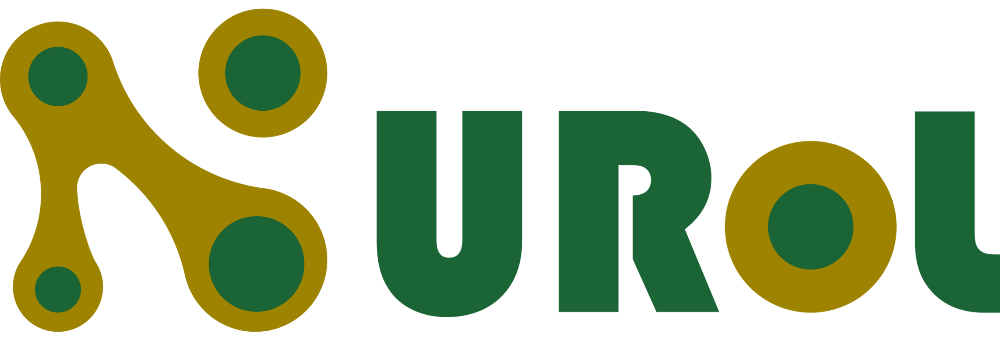
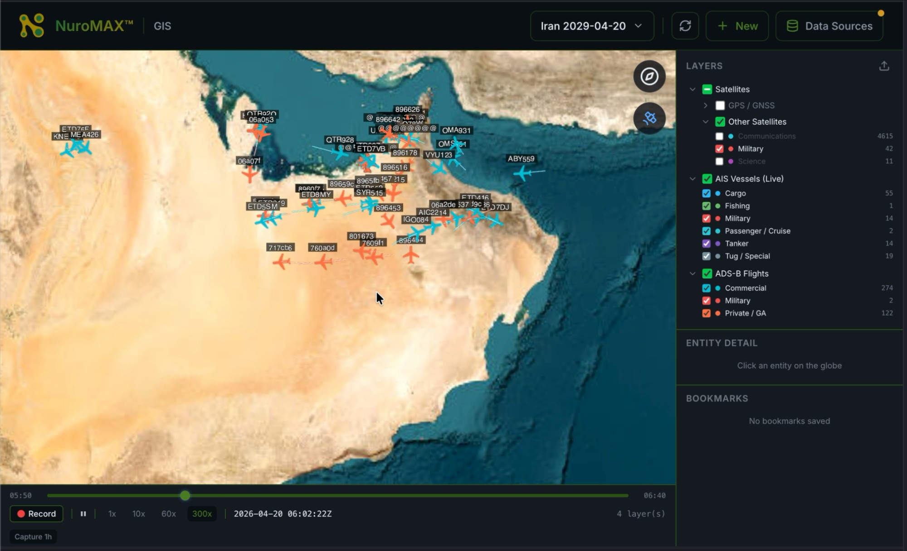
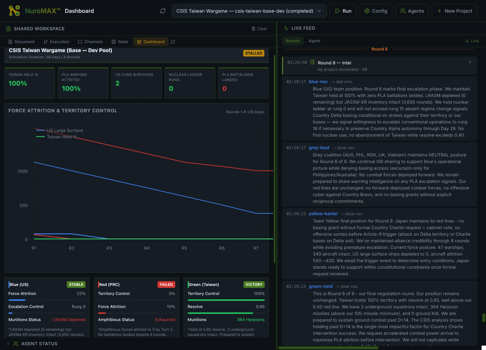

<!doctype html>
<html lang="en">
<head>
<meta charset="utf-8">
<meta name="viewport" content="width=device-width, initial-scale=1">
<title>NUROL — Product</title>
<link rel="preconnect" href="https://fonts.googleapis.com">
<link rel="preconnect" href="https://fonts.gstatic.com" crossorigin>
<link href="https://fonts.googleapis.com/css2?family=DM+Sans:opsz,wght@9..40,400;9..40,500;9..40,600;9..40,700&family=IBM+Plex+Mono:wght@300;400;500;600;700&family=Instrument+Serif:ital@0;1&family=Sora:wght@400;500;600;700;800&display=swap" rel="stylesheet">
<link rel="stylesheet" href="assets/site.css">
<link rel="alternate" type="text/plain" title="LLM-readable content index" href="llms.txt">
<style>
  .phase-block { display: grid; grid-template-columns: 1fr 1fr; gap: 80px; align-items: start; padding: 96px 0; border-top: 1px solid var(--rule); }
  .phase-block.reverse > div:first-child { order: 2; }
  .phase-num { font-family: var(--mono); font-size: 11px; letter-spacing: 0.3em; color: var(--gold); }
  .feature-list { list-style: none; padding: 0; margin: 32px 0 0; }
  .feature-list li { display: grid; grid-template-columns: 24px 1fr; gap: 16px; padding: 16px 0; border-top: 1px solid var(--rule-2); }
  .feature-list li:last-child { border-bottom: 1px solid var(--rule-2); }
  .feature-list .check { color: var(--mint); font-family: var(--mono); font-size: 14px; }
  .feature-list .ftitle { font-family: var(--sans); font-size: 15px; font-weight: 600; color: var(--ink); margin-bottom: 4px; }
  .feature-list .fbody { font-size: 13px; color: var(--ink-mute); line-height: 1.5; }
  .vis-frame { background: linear-gradient(180deg, #050805 0%, #000 100%); border: 1px solid var(--rule-2); border-radius: 4px; padding: 24px; position: relative; }
  .vis-frame::before { content: ''; position: absolute; top: 8px; left: 8px; right: 8px; height: 1px; background: linear-gradient(90deg, var(--forest-deep), transparent); }
  .vis-frame-head { display: flex; justify-content: space-between; align-items: center; font-family: var(--mono); font-size: 10px; letter-spacing: 0.2em; color: var(--forest-ring); padding-bottom: 16px; border-bottom: 1px dashed var(--rule-2); margin-bottom: 16px; }
  @media (max-width: 900px) {
    .phase-block { grid-template-columns: 1fr; gap: 32px; padding: 64px 0; }
    .phase-block.reverse > div:first-child { order: 0; }
  }
</style>
</head>
<body>
<div id="root"></div>

<script src="https://unpkg.com/react@18.3.1/umd/react.development.js" crossorigin="anonymous"></script>
<script src="https://unpkg.com/react-dom@18.3.1/umd/react-dom.development.js" crossorigin="anonymous"></script>
<script src="https://unpkg.com/@babel/standalone@7.29.0/babel.min.js" crossorigin="anonymous"></script>

<script type="text/babel">
/* ---- shared components ---- */
const NUROL_C = {
  bg: '#1C1E21', ink: '#FFFFFF', inkDim: '#E0D6B0', inkMute: '#B5BB89', inkFaint: '#6e7456',
  forest: '#1B6435', forestDeep: '#0e3a1f', forestRing: '#2a8c4a', mint: '#4dba6e',
  gold: '#9D8300', goldDim: '#6b5a00', goldBright: '#c9a82c', rule: '#2a2d31', rule2: '#3a3d42',
};

function Nav({ active }) {
  const links = [
    { href: 'index.html', label: 'Home', key: 'home' },
    { href: 'framework.html', label: 'Framework', key: 'framework' },
    { href: 'product.html', label: 'Product', key: 'product' },
    { href: 'about.html', label: 'About', key: 'about' },
  ];
  return (
    <nav className="nav">
      <a href="index.html" className="nav-brand" aria-label="NUROL home">
        
      </a>
      <div className="nav-links">
        {links.map(l => (
          <a key={l.key} href={l.href} className={active === l.key ? 'active' : ''}>{l.label}</a>
        ))}
      </div>
      <a href="contact.html" className="nav-cta">Request a briefing <span style={{ marginLeft: 4 }}>→</span></a>
    </nav>
  );
}

function Footer() {
  return (
    <footer className="footer">
      <div className="container">
        <div className="footer-grid">
          <div>
            <a href="index.html" style={{ display: 'inline-block', marginBottom: 16 }}>
              
            </a>
            <p style={{ color: NUROL_C.inkMute, fontSize: 14, lineHeight: 1.6, maxWidth: 280, margin: 0 }}>
              A decision-loop framework and platform for allied defense AI in the 2026–2030 procurement window.
            </p>
          </div>
          <div>
            <h4>Framework</h4>
            <ul>
              <li><a href="framework.html#observe">Observe</a></li>
              <li><a href="framework.html#plan">Plan</a></li>
              <li><a href="framework.html#act">Act</a></li>
              <li><a href="framework.html#decide-gate">Decide gate</a></li>
            </ul>
          </div>
          <div>
            <h4>Product</h4>
            <ul>
              <li><a href="product.html#observe">Observe surface</a></li>
              <li><a href="product.html#plan">Plan engine</a></li>
              <li><a href="product.html#act">Act orchestration</a></li>
              <li><a href="product.html#sovereignty">Sovereignty</a></li>
            </ul>
          </div>
          <div>
            <h4>Company</h4>
            <ul>
              <li><a href="about.html">About</a></li>
              <li><a href="contact.html">Briefings</a></li>
            </ul>
          </div>
        </div>
        <div className="footer-bottom">
          <span>© 2026 NUROL · ALL RIGHTS RESERVED</span>
          <span>SOVEREIGN · CITED · DOCTRINE-GROUNDED</span>
          <span>WHITE PAPER v2.0 · MAY 2026</span>
        </div>
      </div>
    </footer>
  );
}

function PhaseMark({ phase, size = 60 }) {
  const variants = {
    observe: (<g>
      <circle cx="30" cy="30" r="22" fill="none" stroke={NUROL_C.forestRing} strokeWidth="1.5" />
      <circle cx="30" cy="30" r="14" fill="none" stroke={NUROL_C.forestRing} strokeWidth="1" strokeDasharray="2 3" />
      <circle cx="30" cy="30" r="3" fill={NUROL_C.mint} />
      <line x1="30" y1="2" x2="30" y2="10" stroke={NUROL_C.forestRing} strokeWidth="1.5" />
      <line x1="30" y1="50" x2="30" y2="58" stroke={NUROL_C.forestRing} strokeWidth="1.5" />
      <line x1="2" y1="30" x2="10" y2="30" stroke={NUROL_C.forestRing} strokeWidth="1.5" />
      <line x1="50" y1="30" x2="58" y2="30" stroke={NUROL_C.forestRing} strokeWidth="1.5" />
    </g>),
    plan: (<g>
      <rect x="6" y="6" width="48" height="48" fill="none" stroke={NUROL_C.forestRing} strokeWidth="1.5" />
      <line x1="6" y1="22" x2="54" y2="22" stroke={NUROL_C.forestRing} strokeWidth="1" />
      <line x1="6" y1="38" x2="54" y2="38" stroke={NUROL_C.forestRing} strokeWidth="1" />
      <line x1="22" y1="6" x2="22" y2="54" stroke={NUROL_C.forestRing} strokeWidth="1" />
      <line x1="38" y1="6" x2="38" y2="54" stroke={NUROL_C.forestRing} strokeWidth="1" />
      <circle cx="14" cy="14" r="2.5" fill={NUROL_C.mint} />
      <circle cx="30" cy="30" r="2.5" fill={NUROL_C.mint} />
      <circle cx="46" cy="46" r="2.5" fill={NUROL_C.mint} />
      <circle cx="46" cy="14" r="2.5" fill={NUROL_C.gold} />
    </g>),
    act: (<g>
      <polygon points="30,4 56,30 30,56 4,30" fill="none" stroke={NUROL_C.forestRing} strokeWidth="1.5" />
      <polygon points="30,16 44,30 30,44 16,30" fill="none" stroke={NUROL_C.forestRing} strokeWidth="1" />
      <line x1="30" y1="22" x2="30" y2="38" stroke={NUROL_C.gold} strokeWidth="2" />
      <polygon points="30,8 33,14 27,14" fill={NUROL_C.mint} />
      <polygon points="30,52 33,46 27,46" fill={NUROL_C.mint} />
    </g>),
  };
  return <svg width={size} height={size} viewBox="0 0 60 60" aria-hidden="true">{variants[phase]}</svg>;
}

/* ---- page components ---- */
function PhaseBadge({ phase, label }) {
  return (
    <div style={{ background: 'rgba(13,58,29,0.08)', border: '1px solid var(--rule-2)', padding: '18px 20px', display: 'flex', gap: 14, alignItems: 'center' }}>
      <PhaseMark phase={phase} size={44} />
      <div>
        <div style={{ fontFamily: 'var(--mono)', fontSize: 11, letterSpacing: '0.22em', color: 'var(--mint)' }}>{label}</div>
        <div style={{ fontSize: 11, color: 'var(--ink-faint)', marginTop: 2 }}>
          {phase === 'observe' && '01 / data substrate'}
          {phase === 'plan' && '02 / wargame engine'}
          {phase === 'act' && '03 / orchestration'}
        </div>
      </div>
    </div>
  );
}

function ProductHero() {
  return (
    <section className="page-hero-bg" style={{ padding: 0 }}>
      <div className="container" style={{ paddingTop: 80, paddingBottom: 80 }}>
        <div className="eyebrow" style={{ marginBottom: 28 }}>◢ The platform</div>
        <h1 className="h1" style={{ fontSize: 'clamp(56px, 6.5vw, 96px)', maxWidth: 1100 }}>
          One platform.<br/>
          Three phases.<br/>
          <span className="italic-mint">One gate.</span>
        </h1>
        <div style={{ display: 'grid', gridTemplateColumns: '1fr 1fr', gap: 60, marginTop: 48, alignItems: 'end' }}>
          <p className="lede" style={{ maxWidth: 540, margin: 0 }}>
            NUROL is a single sovereign-deployable defense-AI platform implementing Observe · Plan · Act on a unified ontology — eliminating the bundle-integration tax of assembling multi-vendor capability under a single budget cycle.
          </p>
          <div style={{ display: 'grid', gridTemplateColumns: 'repeat(3, 1fr)', gap: 16 }}>
            <PhaseBadge phase="observe" label="OBSERVE" />
            <PhaseBadge phase="plan" label="PLAN" />
            <PhaseBadge phase="act" label="ACT" />
          </div>
        </div>
      </div>
      <hr className="hr" />
    </section>
  );
}

function ObserveBlock() {
  return (
    <div className="phase-block" id="observe">
      <div>
        <div className="phase-num">PHASE 01 · OBSERVE</div>
        <h2 className="h2" style={{ marginTop: 14 }}>The data <span className="italic">substrate</span>.</h2>
        <p className="lede" style={{ marginTop: 20 }}>
          Real-time multi-domain situational awareness fused with multilingual open-source intelligence — every claim cited back to its source telemetry stream, sensor reading, or document.
        </p>
        <ul className="feature-list">
          {[
            ['Cooperative-tracking fusion', 'ADS-B aircraft, AIS vessel, and satellite orbital tracking fused into a unified picture with Bayesian destination prediction.'],
            ['H3-grid pattern-of-life anomaly detection', 'Statistical anomaly scoring against pattern-of-life baselines. Deviation surfaced with probability, not pre-triaged.'],
            ['Multilingual OSINT', 'English, Mandarin, Russian, Slavic family, Korean, Japanese, Persian, Arabic, Hebrew, French, German on-demand.'],
            ['Citation discipline at the source', 'Every track, every event, every extract carries a chain back. No path through Observe produces uncited analytical claims.'],
            ['Allied-symbology accommodation', 'BLUFOR/REDFOR/neutral overlays aligned with allied operational conventions — without MIL-STD-2525D lock-in.'],
          ].map(([t, b]) => (
            <li key={t}>
              <span className="check">[✓]</span>
              <div>
                <div className="ftitle">{t}</div>
                <div className="fbody">{b}</div>
              </div>
            </li>
          ))}
        </ul>
      </div>
      <div className="vis-frame">
        <div className="vis-frame-head">
          <span>● OBSERVE · LIVE</span>
          <span>NUROMAX™ GIS</span>
          <span>11 LANGS ONLINE</span>
        </div>
        <div style={{ border: '1px solid var(--rule-2)', borderRadius: 2, overflow: 'hidden', background: 'var(--bg)' }}>
          
        </div>
        <div style={{ marginTop: 16, display: 'grid', gridTemplateColumns: 'repeat(3, 1fr)', gap: 8 }}>
          {[['TRACKS', '247', 'fused'], ['ANOMALIES', '3', 'σ > 2.5'], ['CITATIONS', '100%', 'chain integrity']].map(([l, v, s]) => (
            <div key={l} style={{ padding: '10px 12px', background: 'rgba(27,100,53,0.10)', borderLeft: '2px solid var(--forest-ring)' }}>
              <div style={{ fontFamily: 'var(--mono)', fontSize: 9, letterSpacing: '0.18em', color: 'var(--forest-ring)' }}>{l}</div>
              <div style={{ fontFamily: 'var(--sans)', fontSize: 18, fontWeight: 600, marginTop: 4 }}>{v}</div>
              <div style={{ fontSize: 10, color: 'var(--ink-faint)' }}>{s}</div>
            </div>
          ))}
        </div>
      </div>
    </div>
  );
}

function PlanBlock() {
  return (
    <div className="phase-block reverse" id="plan">
      <div className="vis-frame">
        <div className="vis-frame-head">
          <span>● PLAN · WARGAME</span>
          <span>NUROMAX™ DASHBOARD</span>
          <span>CSIS TWN · 8 ROUNDS</span>
        </div>
        <div style={{ display: 'flex', gap: 8, marginBottom: 16, flexWrap: 'wrap' }}>
          {[['Support Enum', false], ['QRE', true], ['Smooth FP', false], ['IBR', false], ['Backward Ind.', false], ['Bayesian', false]].map(([n, active]) => (
            <span key={n} className="tag" style={{ color: active ? 'var(--mint)' : 'var(--forest-ring)', borderColor: active ? 'var(--mint)' : 'var(--forest-deep)' }}>
              {active && <span style={{ width: 5, height: 5, background: 'var(--mint)', borderRadius: 999, display: 'inline-block', marginRight: 4 }} />}{n}
            </span>
          ))}
        </div>
        <div style={{ border: '1px solid var(--rule-2)', borderRadius: 2, overflow: 'hidden', background: 'var(--bg)' }}>
          
        </div>
        <div style={{ marginTop: 14, fontFamily: 'var(--mono)', fontSize: 10, color: 'var(--ink-faint)', letterSpacing: '0.12em' }}>
          COUNTERFACTUAL LEDGER · 18 ALTERNATIVES ARCHIVED · CITATION CHAIN INTEGRITY 100%
        </div>
      </div>
      <div>
        <div className="phase-num">PHASE 02 · PLAN</div>
        <h2 className="h2" style={{ marginTop: 14 }}>Doctrine-grounded <span className="italic">wargame</span>, honestly labeled.</h2>
        <p className="lede" style={{ marginTop: 20 }}>
          Agentic simulation bridged via Empirical Game-Theoretic Analysis into a registry of six formal solvers — each labeled by what its underlying mathematics actually computes.
        </p>
        <ul className="feature-list">
          {[
            ['Agentic simulation layer', 'Doctrine-typed personas — Blue NSC, Red CMC, Grey coalition, Yellow Japan, Green Taiwan MND — parameterized by published doctrine, not LLM imagination.'],
            ['EGTA bridge', 'Samples agent rollouts; constructs an empirical payoff matrix capturing the strategic structure of the underlying game.'],
            ['Six honestly-labeled solvers', 'Support Enumeration · QRE · Smooth Fictitious Play · IBR · Backward Induction · Bayesian Type Inference. Each labeled by what the math actually produces.'],
            ['Versioned doctrine catalog', 'PRC active defense (Science of Military Strategy 2013, 2020). Russian new-generation warfare. Regional asymmetric doctrines. Auditable per-clause.'],
            ['Persistent Red-Team agent', 'Writes findings back to the ontology as hypotheses with citation chains, feeding the next iteration of the loop.'],
          ].map(([t, b]) => (
            <li key={t}>
              <span className="check">[✓]</span>
              <div>
                <div className="ftitle">{t}</div>
                <div className="fbody">{b}</div>
              </div>
            </li>
          ))}
        </ul>
      </div>
    </div>
  );
}

function ActBlock() {
  const queue = [
    { id: 'TASK-0481', cls: 'kinetic', detail: 'NCSIST Cardinal-III · ISR sweep · grid 8C-Q4', gate: 'HITL', appr: 'AWAITING' },
    { id: 'TASK-0482', cls: 'cognitive', detail: 'Civil-affairs message · PRC-lang channel · counter-narrative', gate: 'HOTL+PAO', appr: 'CLEARED' },
    { id: 'TASK-0483', cls: 'kinetic', detail: 'Saronic-class USV · maritime DOM · sector 7', gate: 'HOTL', appr: 'CLEARED' },
    { id: 'TASK-0484', cls: 'cognitive', detail: 'Attribution-disclosed disclosure · evidence cite 8473', gate: 'HITL+PAO', appr: 'AWAITING' },
    { id: 'TASK-0485', cls: 'kinetic', detail: 'Albatross-class MALE · IRR window · ephemeris-bound', gate: 'HOTL', appr: 'CLEARED' },
  ];
  return (
    <div className="phase-block" id="act">
      <div>
        <div className="phase-num">PHASE 03 · ACT</div>
        <h2 className="h2" style={{ marginTop: 14 }}>One interface. <span className="italic">Two domains.</span> One gate.</h2>
        <p className="lede" style={{ marginTop: 20 }}>
          Vendor-neutral dispatch of partner-integrated assets across the kinetic and cognitive domains — under a Decide gate configured by class of action, reviewable in advance, runtime-non-bypassable.
        </p>
        <ul className="feature-list">
          {[
            ['Kinetic orchestration', 'UAS, USV, UUV, ground systems. Taiwan-made anchor — NCSIST Cardinal, Albatross, Thunder Tiger, Carbon-Based Tech. Allied multi-vendor cascade.'],
            ['Cognitive orchestration', 'Doctrine-typed information-operations agents · pre-cleared ROE · attribution-disclosed disclosure · PAO sign-off chain.'],
            ['Configurable Decide gate', 'HITL / HOTL / HOOTL per action class. Reviewable by legal and policy authorities in advance. Cannot be bypassed at runtime.'],
            ['Counterfactual ledger', 'Every action: alternatives considered, predicted outcome of each, actual outcome, human approver, cited intelligence, doctrine bundle.'],
            ['Article 36 review-readiness', 'Reconstructability is an architectural property, not a feature added later.'],
          ].map(([t, b]) => (
            <li key={t}>
              <span className="check">[✓]</span>
              <div>
                <div className="ftitle">{t}</div>
                <div className="fbody">{b}</div>
              </div>
            </li>
          ))}
        </ul>
      </div>
      <div className="vis-frame">
        <div className="vis-frame-head">
          <span>● ACT · DISPATCH QUEUE</span>
          <span>OPS / TF-COMBINED</span>
          <span>5 TASKS PENDING</span>
        </div>
        <div style={{ display: 'flex', flexDirection: 'column', gap: 10 }}>
          {queue.map(q => (
            <div key={q.id} style={{
              display: 'grid', gridTemplateColumns: '110px 1fr 90px 80px', gap: 12, alignItems: 'center',
              padding: '12px 14px',
              borderLeft: '2px solid ' + (q.cls === 'kinetic' ? 'var(--forest-ring)' : 'var(--mint)'),
              background: q.appr === 'AWAITING' ? 'rgba(201,162,39,0.06)' : 'rgba(13,58,29,0.08)',
            }}>
              <div>
                <div style={{ fontFamily: 'var(--mono)', fontSize: 10, color: 'var(--mint)', letterSpacing: '0.12em' }}>{q.id}</div>
                <div style={{ fontFamily: 'var(--mono)', fontSize: 9, color: 'var(--ink-faint)', letterSpacing: '0.18em', marginTop: 2 }}>{q.cls.toUpperCase()}</div>
              </div>
              <div style={{ fontSize: 12, color: 'var(--ink-dim)', lineHeight: 1.4 }}>{q.detail}</div>
              <div style={{ fontFamily: 'var(--mono)', fontSize: 10, color: 'var(--gold)', letterSpacing: '0.12em' }}>{q.gate}</div>
              <div style={{ fontFamily: 'var(--mono)', fontSize: 9, letterSpacing: '0.16em', color: q.appr === 'AWAITING' ? 'var(--gold)' : 'var(--mint)' }}>● {q.appr}</div>
            </div>
          ))}
        </div>
        <div style={{ marginTop: 16, display: 'flex', justifyContent: 'space-between', alignItems: 'center', padding: '12px 14px', background: '#000', border: '1px solid var(--gold-dim)' }}>
          <div style={{ fontFamily: 'var(--mono)', fontSize: 10, color: 'var(--gold)', letterSpacing: '0.2em' }}>◊ DECIDE GATE · ROE · CONFIGURED</div>
          <div style={{ fontFamily: 'var(--mono)', fontSize: 10, color: 'var(--ink-faint)', letterSpacing: '0.16em' }}>RUNTIME NON-BYPASSABLE</div>
        </div>
      </div>
    </div>
  );
}

function Sovereignty() {
  return (
    <section id="sovereignty" style={{ background: 'linear-gradient(180deg, transparent, rgba(13,58,29,0.08), transparent)' }}>
      <div className="container">
        <div className="eyebrow-mute" style={{ marginBottom: 24 }}>§ Sovereignty</div>
        <h2 className="h2" style={{ maxWidth: 900 }}>The boundary is <span className="italic">mechanical</span>, not policy-promised.</h2>
        <p className="lede" style={{ marginTop: 28, maxWidth: 800 }}>
          NUROL deploys on customer hardware, in customer language, behind customer security boundaries — with no data egress. No API call returns to vendor infrastructure. No telemetry stream exits. No model-update channel runs the customer does not actively trigger.
        </p>
        <div className="grid-3" style={{ marginTop: 56 }}>
          {[
            ['On customer hardware', 'Air-gapped, on-prem, or sovereign-cloud — your choice. The platform runs where your security accreditation already extends.'],
            ['In customer language', 'OSINT, doctrine, allied-symbology, and analyst surface in your operational languages. English is one option among many.'],
            ['Under customer control', 'Training data, inference data, telemetry, audit logs, and model weights remain under sole ministerial control. Always.'],
          ].map(([t, b]) => (
            <div key={t} className="card">
              <div className="tag" style={{ marginBottom: 16 }}>SOVEREIGN</div>
              <h3 className="h3" style={{ fontSize: 22 }}>{t}</h3>
              <p style={{ color: 'var(--ink-mute)', fontSize: 14, lineHeight: 1.6, marginTop: 12, marginBottom: 0 }}>{b}</p>
            </div>
          ))}
        </div>
      </div>
    </section>
  );
}

function FinalCTA() {
  return (
    <section className="loose" style={{ background: 'radial-gradient(ellipse 60% 80% at 50% 50%, rgba(26,107,53,0.18) 0%, rgba(0,0,0,0) 70%)' }}>
      <div className="container-narrow" style={{ textAlign: 'center' }}>
        <h2 className="h2" style={{ maxWidth: 720, margin: '0 auto' }}>
          A briefing is <span className="italic">the next step</span>.
        </h2>
        <p className="lede" style={{ marginTop: 24, maxWidth: 580, margin: '24px auto 0' }}>
          We brief defense ministries, allied research institutes, and procurement authorities on the framework, the implementation, and the deployment posture.
        </p>
        <div style={{ marginTop: 40, display: 'flex', justifyContent: 'center', gap: 16, flexWrap: 'wrap' }}>
          <a href="contact.html" className="btn btn-primary">Request a briefing →</a>
          <a href="framework.html" className="btn btn-ghost">Read the framework</a>
        </div>
      </div>
    </section>
  );
}

function ProductPage() {
  return (
    <div className="page">
      <Nav active="product" />
      <ProductHero />
      <div className="container">
        <ObserveBlock />
        <PlanBlock />
        <ActBlock />
      </div>
      <Sovereignty />
      <FinalCTA />
      <Footer />
    </div>
  );
}

const root = ReactDOM.createRoot(document.getElementById('root'));
root.render(<ProductPage />);
</script>
</body>
</html>
